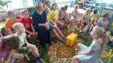
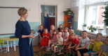
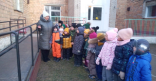
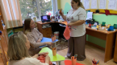

Новости
Акция «Три П: Понимаем, Принимаем, Помогаем»
Ежегодно в нашем детском саду проводится акция "Три П", направленная на формирование толерантных установок по отношению к детям с ограниченными возможностями здоровья и инвалидностью. В нашей группе № 9 в рамках данной акции были организованы - показ мультфильмов по тематике данной акции("Про Димку", "Подарок"), провели беседу о людях с ограниченными возможностями здоровья, провели игры совместно с педагогом-психологом на формирование толерантных отношений к людям с ОВЗ.



Опубликованно 22.11.2023 г.
Международный день логопеда
В международный день логопеда, 14 ноября 2023 года, наш учитель-логопед Свидетелева Анжелика Сергеевна, провела мастер-класс для родителей на тему: «Развитие связной речи как одно из условий подготовки к школе». Родители узнали о важности развития связной речи детей в дошкольном возрасте. С удовольствием приняли участие в играх на развитие связной речи. А также получили ответы на свои вопросы.

Опубликованно 20.11.2023 г.